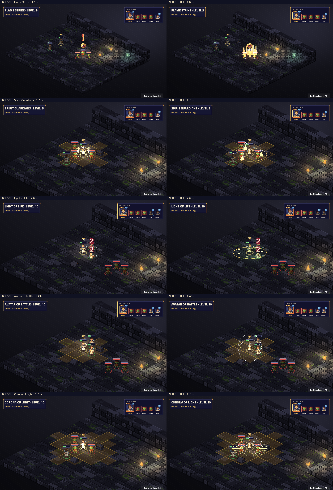

Attack · Level 1
Weapon attack, weapon range: weapon damage
Healing, restoration, revival and Death Ward · Verification and budget report
Native TV capture: before on the left, after on the right. Fixed map and seed; real engine events and BeatPlayer. Level labels are the character’s unlock level. Videos preserve the complete cast, impact, effect tails and camera settle. Posters align the impact for comparison.
Frozen before: 0e96d34360e71f22497286098ca1fe77cad3af8e. Review notes and limitations · Frame measurements · Actual beat timings
Complete 44-sample contact sheet · Native cast close-up

Static modifiers have no standalone proc. Every ability and visible proc must have a real fixture for this capture to succeed.
| Name | Subclass | Level | Kind | Cut-in | Before keys | After keys |
|---|---|---|---|---|---|---|
| Bane | Base class | 1 | ability | short | characters.pray · fx.hex.shadow | characters.cleric_prayer · fx.cleric_bane.grave |
| Bless | Base class | 1 | ability | short | characters.pray · fx.bless.gold | characters.cleric_prayer · fx.cleric_bless.holy |
| Command | Base class | 1 | ability | short | characters.pray · fx.hold.holy | characters.cleric_prayer · fx.cleric_command.holy |
| Cure Wounds | Base class | 1 | ability | short | characters.pray · fx.heal.holy | characters.cleric_restore · fx.cleric_cure_wounds.healing |
| Guiding Bolt | Base class | 1 | ability | short | characters.pray · fx.radiant.dawn · projectiles.radiant | characters.cleric_prayer · fx.cleric_guiding_bolt.radiant · fx.cleric_guiding_bolt_shot.radiant |
| Healing Word | Base class | 1 | ability | short | characters.pray · fx.heal.holy | characters.cleric_restore · fx.cleric_healing_word.healing |
| Inflict Wounds | Base class | 1 | ability | short | characters.pray · fx.necrotic.blood | characters.cleric_judgement · fx.cleric_inflict_wounds.grave |
| Resistance | Base class | 1 | ability | none | characters.pray · fx.ward.holy | characters.cleric_prayer · fx.cleric_resistance.holy |
| Sacred Flame | Base class | 1 | ability | none | characters.pray · fx.radiant.dawn | characters.cleric_judgement · fx.cleric_sacred_flame.radiant |
| Shield of Faith | Base class | 1 | ability | short | characters.pray · fx.ward.holy | characters.cleric_prayer · fx.cleric_shield_of_faith.holy |
| Toll the Dead | Base class | 1 | ability | none | characters.pray · fx.necrotic.grave | characters.cleric_judgement · fx.cleric_toll_the_dead.grave |
| Word of Radiance | Base class | 1 | ability | none | characters.pray · fx.radiant.dawn | characters.cleric_prayer · fx.cleric_word_of_radiance.radiant |
| Channel Divinity: Divine Spark | Base class | 2 | ability | short | characters.pray · fx.heal.holy | characters.cleric_restore · fx.cleric_divine_spark.healing |
| Channel Divinity: Turn Undead | Base class | 2 | ability | short | characters.pray · fx.circle.holy | characters.cleric_prayer · fx.cleric_turn_undead.radiant |
| Aid | Base class | 3 | ability | short | characters.pray · fx.bless.gold | characters.cleric_restore · fx.cleric_aid.healing |
| Blindness | Base class | 3 | ability | short | characters.pray · fx.pillar.shadow | characters.cleric_prayer · fx.cleric_blindness.grave |
| Hold Person | Base class | 3 | ability | short | characters.pray · fx.hold.holy | characters.cleric_prayer · fx.cleric_hold_person.holy |
| Lesser Restoration | Base class | 3 | ability | short | characters.pray · fx.restore.holy | characters.cleric_restore · fx.cleric_lesser_restoration.healing |
| Spiritual Weapon | Base class | 3 | ability | full | characters.pray · signature.spell_spiritual_weapon.force | characters.cleric_judgement · fx.cleric_spiritual_weapon.force |
| Bestow Curse | Base class | 5 | ability | short | characters.pray · fx.hex.shadow | characters.cleric_judgement · fx.cleric_bestow_curse.grave |
| Dispel Magic | Base class | 5 | ability | short | characters.pray · fx.dispel.arcane | characters.cleric_restore · fx.cleric_dispel_magic.holy |
| Mass Healing Word | Base class | 5 | ability | short | characters.pray · fx.heal.holy | characters.cleric_restore · fx.cleric_mass_healing_word.healing |
| Channel Divinity: Sear Undead | Base class | 5 | ability | short | characters.pray · fx.radiant.dawn | characters.cleric_judgement · fx.cleric_sear_undead.radiant |
| Spirit Guardians | Base class | 5 | ability | full | characters.pray · signature.spell_spirit_guardians.radiant | characters.cleric_judgement · fx.cleric_spirit_guardians.radiant |
| Banishment | Base class | 7 | ability | short | characters.pray · fx.pillar.holy | characters.cleric_judgement · fx.cleric_banishment.holy |
| Death Ward | Base class | 7 | ability | short | characters.pray · fx.ward.holy | characters.cleric_prayer · fx.cleric_death_ward.holy |
| Divine Strike | Base class | 7 | proc | none | No art key | fx.cleric_divine_strike.radiant |
| Death Ward Rescue | Base class | 7 | proc | none | No art key | fx.cleric_death_ward_rescue.holy |
| Flame Strike | Base class | 9 | ability | full | characters.pray · signature.spell_flame_strike.holy | characters.cleric_judgement · fx.cleric_flame_strike.fire |
| Greater Restoration | Base class | 9 | ability | short | characters.pray · fx.restore.holy | characters.cleric_restore · fx.cleric_greater_restoration.healing |
| Mass Cure Wounds | Base class | 9 | ability | short | characters.pray · fx.heal.holy | characters.cleric_restore · fx.cleric_mass_cure_wounds.healing |
| Divine Intervention | Base class | 10 | ability | short | characters.pray · fx.pillar.holy | characters.cleric_restore · fx.cleric_divine_intervention.healing |
| Channel Divinity: Preserve Life | cleric.life | 3 | ability | short | characters.summon · fx.heal.holy | characters.cleric_restore · fx.cleric_preserve_life.healing |
| Word of Renewal | cleric.life | 6 | ability | full | characters.cast · signature.life_revive.holy | characters.cleric_restore · fx.cleric_word_of_renewal.healing |
| Light of Life | cleric.life | 10 | ability | full | characters.summon · signature.life_revive.holy | characters.cleric_restore · fx.cleric_mass_revival.healing |
| Channel Divinity: Radiance of the Dawn | cleric.light | 3 | ability | full | characters.pray · signature.light_radiant_burst.dawn | characters.cleric_judgement · fx.cleric_radiance_of_the_dawn.radiant |
| Burning Luminescence | cleric.light | 6 | proc | none | No art key | fx.cleric_burning_luminescence.radiant |
| Warding Flare | cleric.light | 6 | ability | none | characters.block · signature.light_radiant_burst.dawn | characters.cleric_prayer · fx.cleric_warding_flare.radiant |
| Corona of Light | cleric.light | 10 | ability | full | characters.pray · signature.light_radiant_burst.dawn | characters.cleric_judgement · fx.cleric_corona_of_light.radiant |
| Channel Divinity: Guided Strike | cleric.war | 3 | ability | full | characters.cast · signature.war_divine_strike.gold | characters.cleric_prayer · fx.cleric_guided_strike.holy |
| War Priest Strike | cleric.war | 3 | ability | full | characters.attack · signature.war_divine_strike.gold | characters.cleric_strike · fx.cleric_war_priest.radiant |
| Crusaders Zeal | cleric.war | 6 | static | none | No art key | No art key |
| Avatar of Battle | cleric.war | 10 | ability | full | characters.summon · signature.war_divine_strike.gold | characters.cleric_prayer · fx.cleric_avatar_of_battle.holy |
Weapon attack, weapon range: weapon damage
Cha save, 4 tiles, burst 1: target gets -2 to attack rolls and -2 Str saves and -2 Dex saves and -2 Con saves and -2 Int saves and -2 Wis saves and -2 Cha saves for 10 rounds
4 tiles, burst 1: target gets +2 to attack rolls and +2 Str saves and +2 Dex saves and +2 Con saves and +2 Int saves and +2 Wis saves and +2 Cha saves for 10 rounds
Wis save, 6 tiles: target is Incapacitated for 1 round — "Halt!" The target stands still and does nothing on its next turn.
1 tile: heals 2d8 + casting modifier
Spell attack, 6 tiles: 4d6 radiant; target is Lit for 1 round
6 tiles: heals 2d4 + casting modifier
Con save, 1 tile: 2d10 necrotic; half damage on a save
1 tile: target gets +1 Str saves and +1 Dex saves and +1 Con saves and +1 Int saves and +1 Wis saves and +1 Cha saves for 10 rounds
Dex save, 6 tiles: 1d8 radiant
6 tiles: target gets +2 AC for 10 rounds
Wis save, 6 tiles: if the target is below 100% HP, 1d12 necrotic; otherwise 1d8 necrotic
Con save, self, burst 1: 1d6 radiant
4 tiles: heals 1d8 + casting modifier
Self, burst 3: if the target is undead, Wis save (target is Frightened until saved)
4 tiles, burst 1: target gains 5 temporary HP
Con save, 6 tiles: target is Blinded until saved
6 tiles: if the target is humanoid, Wis save (target is Paralysed until saved)
1 tile: ends poison conditions on target; ends Blinded on target; ends Paralysed on target
Spell attack, 6 tiles: 1d8 + casting modifier force
Wis save, 1 tile: target has disadvantage on its attack rolls for 10 rounds
6 tiles: ends concentration; ends magical conditions on target
6 tiles, all allies: heals 2d4 + casting modifier
Self, burst 3: if the target is undead, Wis save (3d8 radiant; target is Frightened until saved)
Wis save, self, burst 2: 3d8 radiant; half damage on a save
Cha save, 6 tiles: target is Incapacitated until saved — The target is cast into a harmless elsewhere, out of the fight until it fights its way back.
1 tile: target is Death Ward
Visible passive triggered during Attack; fixture seed 7. Weapon attack, weapon range: weapon damage
Real Death Ward rescue; fixture seed 7.
Dex save, 6 tiles, burst 1: 5d6 fire; 5d6 radiant; half damage on a save
1 tile: ends charm, fear, magical, poison, sleep conditions on target
6 tiles, burst 3: heals 5d8 + casting modifier
0 tiles, all allies: heals 4d8 + casting modifier; ends charm, fear, magical, poison, sleep conditions on target
Life Domain: 0 tiles, burst 3: if the target is below 50% HP, heals 2d6 + level
Life Domain: 6 tiles: heals 2d4 + casting modifier
Life Domain: 0 tiles, all allies: heals 2d8 + casting modifier
Light Domain: Self, burst 3: reveals hidden enemies (burst 3); Con save (2d10 radiant; target is Lit for 1 round; half damage on a save)
Light Domain: Visible passive triggered during Guiding Bolt; fixture seed 7. Spell attack, 6 tiles: 5d6 radiant; target is Lit for 1 round
Light Domain: Real reaction to Attack; fixture seed 7.
Light Domain: Con save, self, burst 3: 5d8 radiant; target is Blinded for 1 round; target is Lit for 2 rounds; half damage on a save
War Domain: 6 tiles: target gets +4 to attack rolls and +2 weapon damage for 1 round
War Domain: Weapon attack, weapon range: weapon damage; 1d8 radiant
War Domain: 0 tiles, burst 2: target gets +2 AC and +2 weapon damage and resists bludgeoning, piercing, slashing for 3 rounds
Wis save, 6 tiles: if the target is below 100% HP, 1d12 necrotic; otherwise 1d8 necrotic